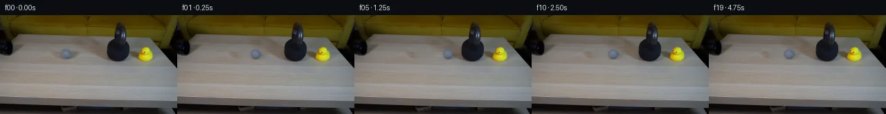

![首帧]()

Round 00
2026-11-05T20:31:30.629500+00:00像素候选变化代码 +204/−0inspection 更新
pixels a9dd6611318c88d9 · code 617414637baecab1
查看本轮 generate.py 真实 diff
--- previous/generate.py
+++ current/generate.py
@@ -0,0 +1,204 @@
+"""Deterministic source-pixel continuation; no image viewer or external renderer."""
+from pathlib import Path
+import json
+import numpy as np
+from PIL import Image, ImageDraw
+from scipy.ndimage import gaussian_filter, map_coordinates, distance_transform_edt
+from scipy.sparse import lil_matrix
+from scipy.sparse.linalg import spsolve
+from artifact_io import save
+
+ROOT = Path(__file__).resolve().parent
+SOURCE = np.asarray(Image.open(ROOT / 'first_frame.png').convert('RGB'))
+H, W = SOURCE.shape[:2]
+YY, XX = np.mgrid[:H, :W].astype(float)
+CX, CY = 95.4, 56.2
+RX, RY = 8.05, 7.30
+CONTACT_X, CONTACT_T = 147.1, 0.75
+APPROACH_SPEED = (CONTACT_X - CX) / CONTACT_T
+REBOUND_SPEED, RESISTANCE = 27.5, 12.0
+STOP_DELAY = REBOUND_SPEED / RESISTANCE
+
+
+def background_recovery():
+ """Local harmonic interpolation, with copied nearby fine table texture."""
+ # Only this source footprint is recovered. A second ellipse covers the
+ # original rightward cast shadow. No masks or references are loaded.
+ object_hole = ((XX - 95.5) / 11.4) ** 2 + ((YY - 56.1) / 9.7) ** 2 < 1
+ shadow_hole = ((XX - 105.7) / 11.2) ** 2 + ((YY - 57.2) / 7.3) ** 2 < 1
+ hole = object_hole | shadow_hole
+ points = np.argwhere(hole)
+ lookup = np.full((H, W), -1, dtype=int)
+ lookup[hole] = np.arange(len(points))
+ system = lil_matrix((len(points), len(points)), dtype=float)
+ rhs = np.zeros((len(points), 3))
+ for i, (y, x) in enumerate(points):
+ system[i, i] = 4
+ for ny, nx in [(y - 1, x), (y + 1, x), (y, x - 1), (y, x + 1)]:
+ j = lookup[ny, nx]
+ if j >= 0:
+ system[i, j] = -1
+ else:
+ rhs[i] += SOURCE[ny, nx].astype(float)
+ filled = SOURCE.astype(float).copy()
+ filled[hole] = spsolve(system.tocsr(), rhs)
+ # Transfer only the weak fine texture of an unobstructed same-depth patch.
+ smooth = gaussian_filter(SOURCE.astype(float), (1.0, 1.0, 0))
+ fine = SOURCE.astype(float) - smooth
+ copied = fine[YY.astype(int), np.clip(XX.astype(int) - 29, 0, W - 1)]
+ taper = np.clip(distance_transform_edt(hole) / 3, 0, 1)
+ filled += np.clip(copied, -3.0, 3.0) * taper[..., None] * 0.48
+ filled[~hole] = SOURCE[~hole]
+ return np.clip(filled, 0, 255), hole
+
+
+BG, RECOVERY_MASK = background_recovery()
+RHO = np.sqrt(((XX - CX) / RX) ** 2 + ((YY - CY) / RY) ** 2)
+SOURCE_ALPHA = np.clip((1.045 - RHO) / 0.18, 0, 1)
+# Unmatte the source edge against the inferred local table. Interior remains
+# source RGB; edge colors are freed from their previous background.
+FOREGROUND = (SOURCE.astype(float) - BG * (1 - SOURCE_ALPHA[..., None]))
+FOREGROUND /= np.maximum(SOURCE_ALPHA[..., None], 0.18)
+FOREGROUND = np.clip(FOREGROUND, 0, 255)
+weight = gaussian_filter(SOURCE_ALPHA, 0.6)
+SHADE = np.stack([
+ gaussian_filter(FOREGROUND[..., c] * SOURCE_ALPHA, 0.6)
+ / np.maximum(weight, 1e-6) for c in range(3)
+], axis=-1)
+FINE = np.clip(FOREGROUND - SHADE, -4, 4) * SOURCE_ALPHA[..., None]
+
+# Protect the actual kettlebell foreground, including a one-pixel color edge.
+BELL_MASK = (XX >= 154) & (XX <= 190) & (YY >= 10) & (YY <= 68)
+BELL_MASK &= SOURCE.astype(float).mean(axis=2) < 85
+
+
+def state(t):
+ if t <= CONTACT_T:
+ return CX + APPROACH_SPEED * t, APPROACH_SPEED, APPROACH_SPEED * t
+ tau = min(t - CONTACT_T, STOP_DELAY)
+ back = REBOUND_SPEED * tau - 0.5 * RESISTANCE * tau * tau
+ return CONTACT_X - back, -max(REBOUND_SPEED - RESISTANCE * tau, 0), CONTACT_X - CX - back
+
+
+def sample_rgb(array, sx, sy):
+ return np.stack([
+ map_coordinates(array[..., c], [sy, sx], order=1, mode='nearest')
+ for c in range(3)
+ ], axis=-1)
… diff truncated; 117 more lines …